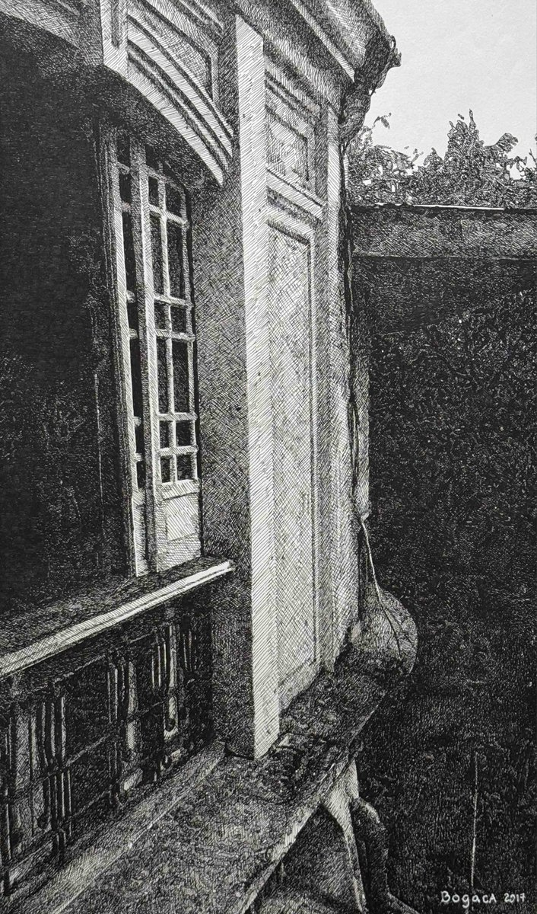
Bahay ni Lola (Grandmother's House)
Unframed — framing available upon inquiry
The house once brimming with life,
witness to laughter and tears.
Now it stands in silence,
left to time.
Gone are the hands that shaped its garden,
though the air stays soft, as if still guarding
what laughter left behind.
The walls will lean, and learn to fall,
keeping their silence
even when there is nothing left to guard.
₱20,000
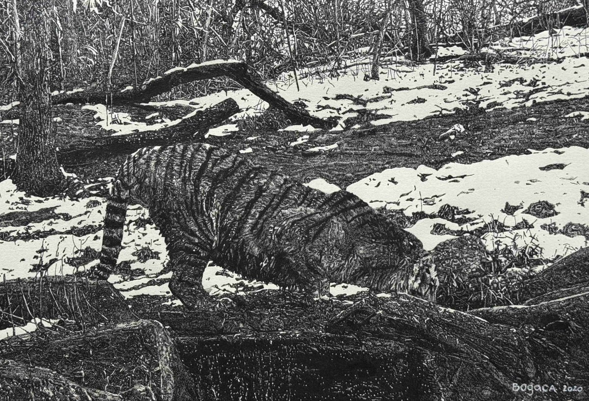
Passing Through
Unframed — framing available upon inquiry
"Not everything we encounter is meant to stay."
A study of movement, instinct, and the fleeting moment in which an unseen journey passes into view.
₱20,000
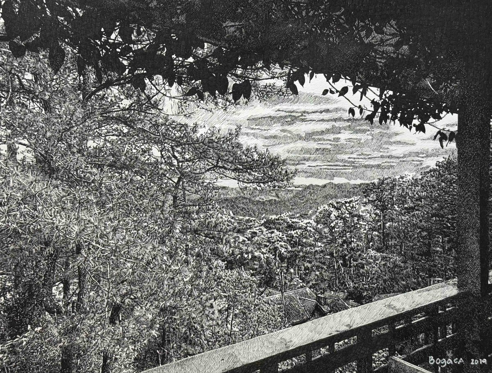
A Soft Life Exists
Unframed — framing available upon inquiry
"Somewhere beyond the noise, life asks less of us."
Framed by dense foliage and looking outward toward an open landscape, A Soft Life Exists holds the possibility of another way of being—not untouched by difficulty, but gentler within it. The distant view becomes less a destination than a reminder: softness does not have to be imagined. It exists.
₱16,000
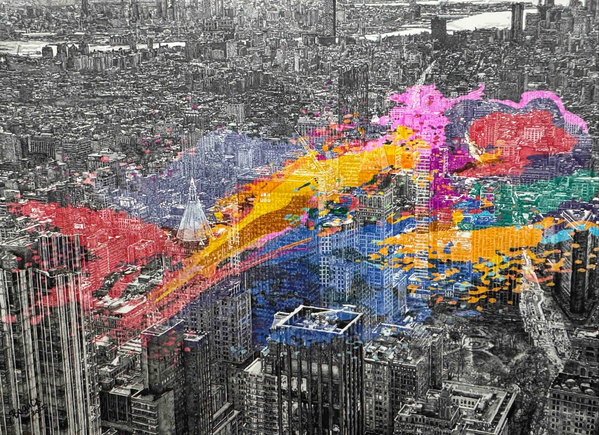
NY City: Breaking Through Concrete
Unframed — framing available upon inquiry
"A city of millions, and still each story walks alone."
A city rendered in black-and-white discipline, then ruptured by color like a heartbeat breaking through concrete. The marks move across buildings, streets, and neighborhoods without obeying their boundaries—suggesting the countless lives unfolding within the city's ordered grid.
From a distance, New York becomes one immense organism. Up close, it is millions of separate stories—moving side by side, each following a life entirely its own.
₱75,000
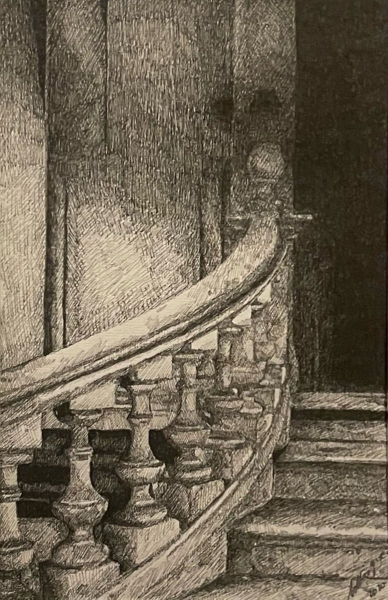
The Weary Banister
Framed, ready to hang
"Some things grow tired from holding us up."
Worn by years of use, the old banister bears its age without surrendering its purpose. Every curve, mark, and imperfection records the countless hands it has steadied along the way.
The Weary Banister turns an ordinary architectural detail into a study of endurance: the unnoticed things that support us, long after they have begun to show the weight of doing so.
₱23,000
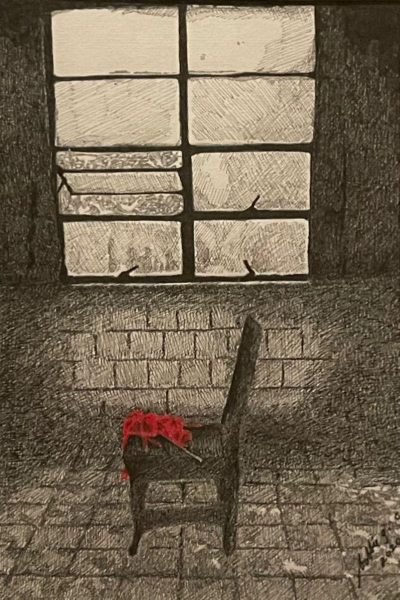
When She Left
Framed, ready to hang
"She took nothing the room could forget."
When She Left captures the space that changes when someone is gone. An empty chair, a weathered room, and a single red cloth hold the presence of someone we never see.
Nothing tells us who she was, why she left, or whether she will return. The room offers only what was left behind—a chair no longer occupied, a red cloth never gathered, and a window that continues to let the day in.
₱25,000
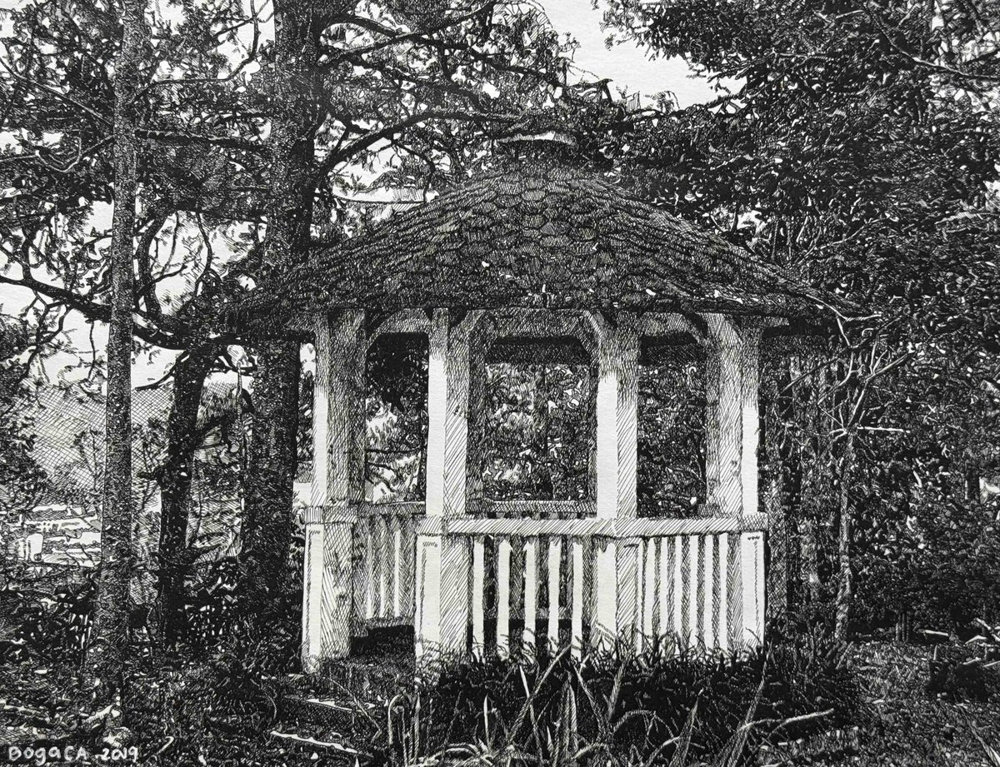
The Gazebo
Unframed — framing available upon inquiry
The branches bend as if to hear
the secrets buried year by year.
And in their hush, the silence sings
of half-forgotten, tender things.
₱16,000
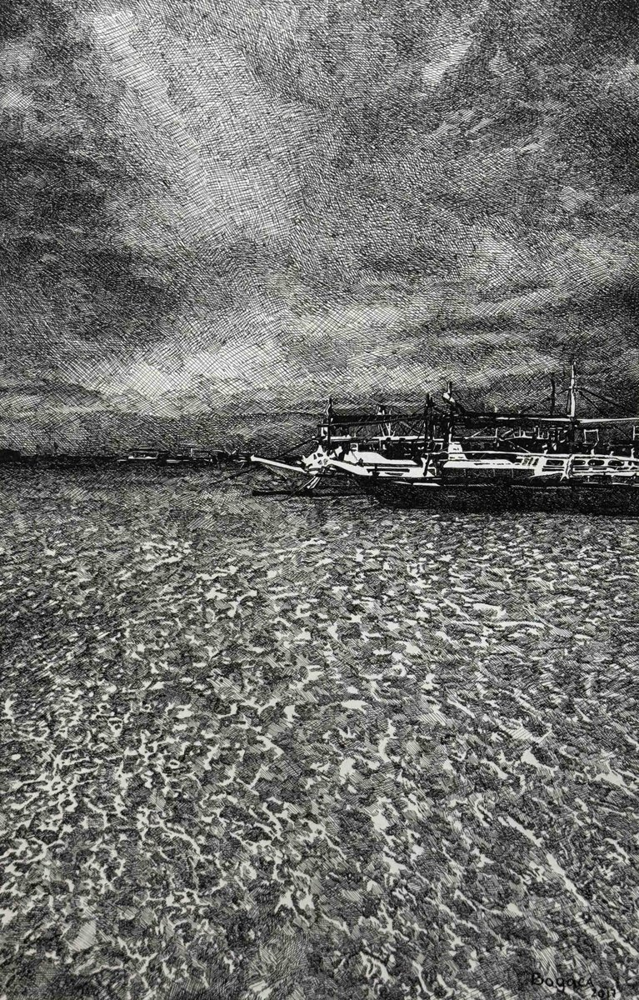
Where the World Opens
Unframed — framing available upon inquiry
"The horizon asks for nothing but the courage to look beyond it."
An immense sky and restless sea surround a vessel at the edge of the frame, while the horizon stretches almost uninterrupted into the distance.
Where the World Opens considers the moment when uncertainty begins to resemble possibility. The way forward is neither promised nor revealed; there is simply more world ahead, waiting to be entered.
₱18,000
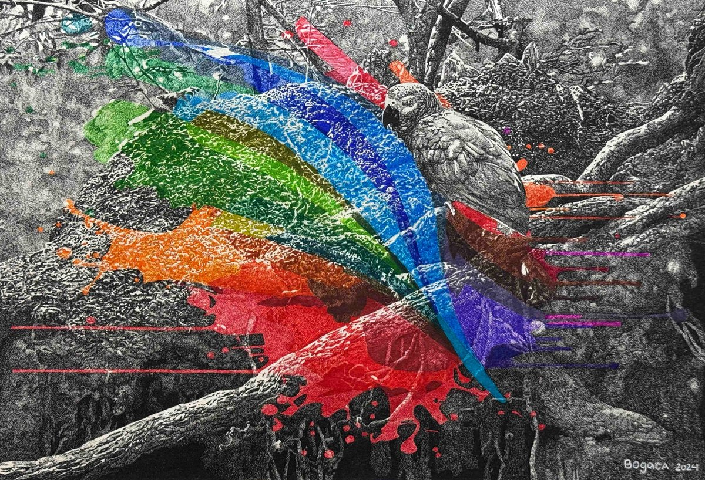
Embracing the Contrast
Unframed — framing available upon inquiry
Once I dared to live again,
the air around me shifted.
At first, a slight tingling,
a gentle touch.
The ground beneath me trembled.
Then loud and unafraid they came,
wave after wave—
a sudden rush of brilliant color.
I stood in awe of what surrounded me:
a daring contradiction
of color and gray.
I stopped waiting for the gray to leave.
I stopped asking the colors to stay.
I stood between them,
and for the first time,
I wanted all of it.
I wanted to live.
₱25,000
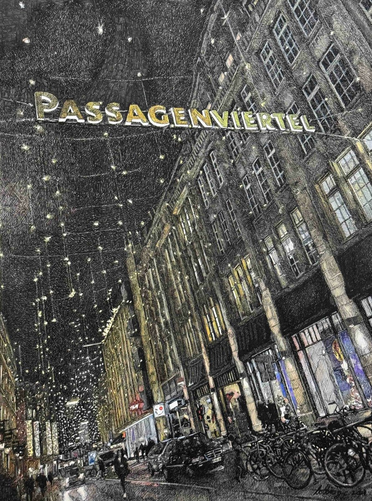
Passagenviertel
Unframed — framing available upon inquiry
"Some places make strangers feel less like strangers."
Beneath strings of lights, bicycles gather along the street while windows and storefronts glow against the dark. Passagenviertel finds warmth in the ordinary closeness of city life—the shared streets, passing faces, and small signs that other lives are unfolding beside our own.
Here, belonging does not require knowing everyone. Sometimes, it is enough simply to be among them.
₱15,000
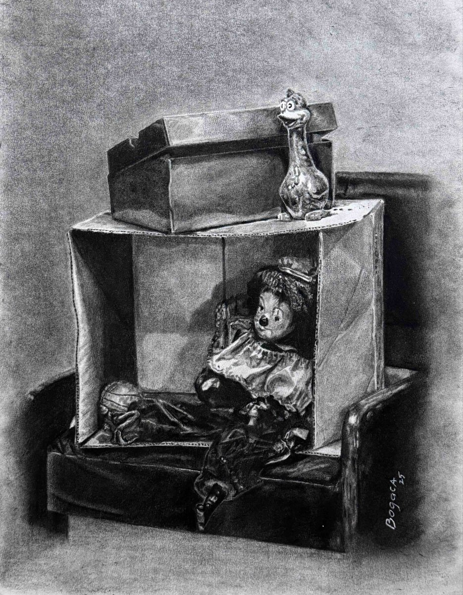
The Great Pretender
Unframed — framing available upon inquiry
Am I loved?
My mask has grown heavy.
I am tired.
Without my mask
I am nobody.
Lost in my thoughts,
away from the pretense,
I am me.
Without my mask
I am alone.
I can breathe.
Away from the pretense,
I am free.
₱23,000